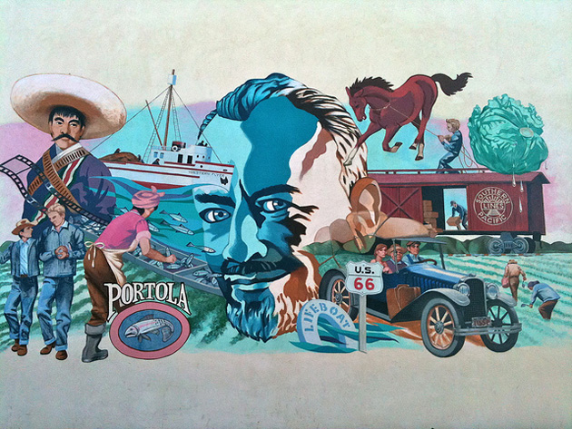

John Steinbeck
Mural overlooking the National Steinbeck Center
Photo: Fielding Mellish/Flickr/Creative Commons
John Ernst Steinbeck, Jr. was an American author. He won the 1962 Nobel Prize in Literature "for his realistic and imaginative writings, combining as they do sympathetic humour and keen social perception". He has been called "a giant of American letters", and many of his works are considered classics of Western literature. | Source
Visit the National Steinbeck Center for more information about John Steinbeck.